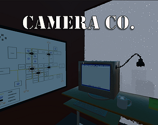
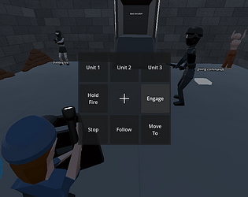
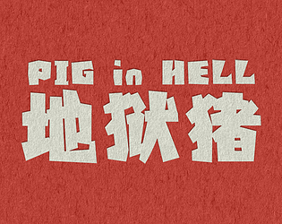
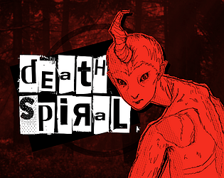

cubensis-alice
Kaya · Godot · multiplayer experiments
3D multiplayer platformers and the networking glue underneath them — plus the occasional tooth-collecting jam detour.
- sciuridaesandbox422 multiplayer
- Base Multiplayer Godot
- Hammaspeikko LD58
SCIURIDAE · THE GAMES WE MAKE
A group of friends who make games and show them off on Monday nights — game-jam entries, prototypes, and odd little experiments. This is the public shelf of what we've made. Each maker keeps their own itch.io page; here's a way in, and a few favourites to start with.


Kaya · Godot · multiplayer experiments
3D multiplayer platformers and the networking glue underneath them — plus the occasional tooth-collecting jam detour.

akatona · musician first, 3D artist second, developer third
A solo jam developer since ~2022 — puzzles, platformers and soundtracks, one jam at a time. Open to collaborating on cool things with cool people.

browser games · realms and hidden knowledge
Squad Leader, and Refraction's Edge — slip in between realms and obtain hidden knowledge. A platformer made with friends.

gistworks · game developer / collaborator
Paper-cut micro-action and high-speed low-res arcade — currently working on a game about a strange inn.

a whole shelf of roguelikes, bullet hells and oddities
One-button horror, deckbuilding survivors, dice puzzlers, baseball survivors, incremental alien abductions — prolific, playful, and mostly playable in the browser.